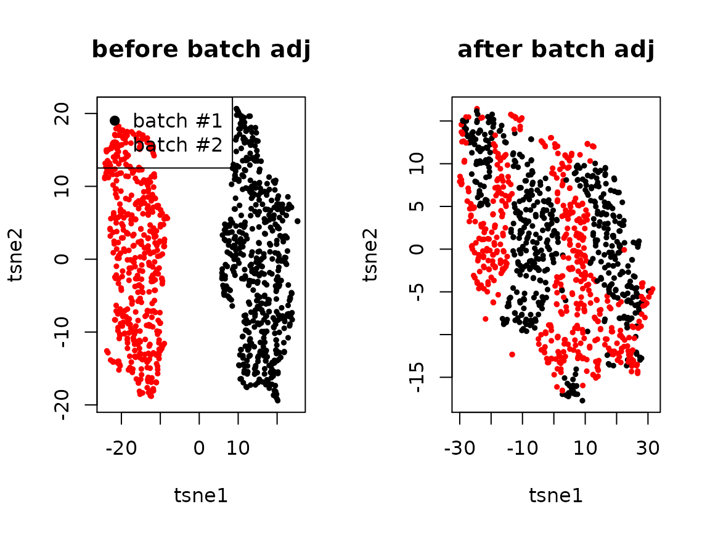

Batch correction within each pseudobulk sample
Yongjin Park
note_batch_correction.RmdA generative scheme for a single-cell count matrix with multiplicative batch effects
We encounter single-cell expression data consisting of multiple batches. One of the primary goals is to identify cell types (clusters/factors) and cell-type-specific gene expression patterns. However, distinguishing batch-specific and cell-type-specific genes only by a factorization method is challenging and often not identifiable from data alone. For each gene \(g\) and cell \(j\), the gene expression \(Y_{gj}\) were sampled from Poisson distribution with the rate parameter:
\[\lambda_{gj} = \lambda_{gj}^{\textsf{unbiased}} \times \prod_{k} \delta_{gk}^{X_{kj}},\]
affected by the batch effects \(\delta_{gk}\). More formally, letting \(X_{kj}\) be a batch membership matrix, assigning a cell \(j\) to a batch \(k\) if and only if \(X_{kj}=1\), we assume the average gene expression rates are linearly affected by in the log-transformed space:
\[\mathbb{E}\!\left[\ln Y_{gj}\right] = \ln \left( \sum_{t} \beta_{gt} \theta_{jt} \right) + \sum_{k} \ln\delta_{gk} X_{kj}.\]
set.seed(1331)
m <- 500 # genes
n <- 1000 # cells
nb <- 2
mb <- 100 # batch specific genes
## 1. batch membership
X <- matrix(0, n, nb)
batch <- sample(nb, n, replace = TRUE)
for(b in 1:nb){
X[batch == b, b] <- 1
}
## 2. batch effects
W.true <- matrix(rnorm(m*nb), m, nb)
ln.delta <- apply(W.true %*% t(X), 2, scale)
## 3. true effects
K <- 5
.beta <- matrix(rgamma(m * K, 1), m, K)
.theta <- matrix(rgamma(n * K, 1), n, K)
lambda.true <- .beta %*% t(.theta)
lambda <- lambda.true * exp(ln.delta)
yy <- apply(lambda, 2, function(l) sapply(l, rpois, n=1))
oo <- order(apply(t(.theta), 2, which.max))If we can accurately estimate a true batch effect matrix, say \(\delta_{gk}\), it is straightforward to adjust the difference between batches. How can we identify the true batch effect \(\delta_{gk}\) for all the genes \(g\) specifically expressed in the batch \(k\)? If we match cells \(i\) and \(j\) sampled from the batches \(a\) and \(b\), respectively, we expect the batch-specific difference \(\delta_{ga} \neq \delta_{gk}\) will persist and even amplify, but the difference originated from cell types will vanish. This problem is equivalent to estimating the potential outcome of gene expressions in each batch \(k\), \(\mathbb{E}\!\left[Y_{gj}^{(k)}\right]\).
A causal inference approach to identify batch effects
Overlap: \(0 < p(X_{jk}=1|Q) < 1\) for all \(k\).
Conditional unconfoundedness: \(Y^{(k)} \perp Y^{(k')} | Q\) for all \(k,k'\) pairs.
We assume that the orignal random projection matrix \(Q\) sufficiently explaining factors that confound the batch assignments and observed gene expressions.
\[\mathbb{E}\!\left[ \mathbb{E}\!\left[Y | Q \right] \right]\]
\[\mathbb{E}\!\left[Y_{gj}, X_{kj} = 1| Q\right]\]
Match cells across different batches (within each stratum)
Estimate shared \(\mu\) and batch-specific effects \(\delta\)
Before we adjust batch membership in the random projection matrix:
[,1] [,2][1,] 0.7617260 -0.7617260 [2,] 0.8283630 -0.8283630 [3,] 0.8099248 -0.8099248 [4,] -0.7250199 0.7250199 [5,] 0.6651915 -0.6651915
## 2. regress out
##
## X theta = X inv(X'X) X' Y
## = U D V' V inv(D^2) V' (U D V')' Y
## = U inv(D) V' V D U' Y
## = U U' Y
x.svd <- svd(X)
U <- x.svd$u
U.t <- t(x.svd$u)
Q.t <- t(Q.raw)
Q.t <- Q.t - U %*% U.t %*% Q.t
Q <- t(Q.t)After we adjust the batch effects:
cor(Q.t, X) [,1] [,2][1,] -2.732905e-16 2.732905e-16 [2,] -5.801340e-16 5.801340e-16 [3,] -2.653637e-16 2.653637e-16 [4,] 3.783374e-16 -3.783374e-16 [5,] -2.732729e-16 2.732729e-16
q.svd <- svd(Q)
## 3. sorting
B <- (sign(q.svd$v) + 1)/2
ss <- apply(sweep(B, 2, 2^(seq(0,K-1)), `*`), 1, sum) + 1
feat.dn <- apply(Q, 2, function(x) x / sqrt(sum(x^2)))
knn <- 3
d <- nrow(feat.dn)
library(RcppAnnoy)
## a. construct dictionary for each batch
dict.list <- lapply(sort(unique(batch)),
function(b) { new(AnnoyAngular, d) })
for(j in 1:length(batch)){
b <- batch[j]
dict.list[[b]]$addItem(j, feat.dn[,j])
}
for(dd in dict.list){
dd$build(50)
}
## b. a simplified routine to retrieve and estimate counterfactual y
.counterfactual <- function(j){
v <- feat.dn[,j]
nn <- c()
dd <- c()
for(k in 1:nb){
if(k == batch[j]) next
.nn <- dict.list[[k]]$getNNsByVector(v, knn)
.dd <- apply(feat.dn[, .nn], 2, function(u) sum((u - v)^2))
nn <- c(nn, .nn)
dd <- c(dd, .dd)
}
print(nn)
w <- exp(-(dd - max(dd)))
w <- w/sum(w)
yy[, nn, drop = FALSE] %*% matrix(w, ncol=1)
}
ngene <- nrow(yy)
nbatch <- ncol(X)
nsample <- max(ss)
.delta.db <- matrix(1, ngene, nbatch) # gene x batch effects
.delta.num.db <- matrix(0, ngene, nbatch) # gene x batch numerators
.delta.denom.db <- matrix(0, ngene, nbatch) # gene x batch denominators
.prob.bs <- matrix(0, nbatch, nsample) # batch x sample probabilities
.size.bs <- matrix(0, nbatch, nsample) # batch x sample freq
.ybar.ds <- matrix(0, ngene, nsample) # gene x sample observed average
.zbar.ds <- matrix(0, ngene, nsample) # gene x sample imputed average
.mu.ds <- matrix(0, ngene, nsample) # gene x sample adjusted average
## Precalculate some statistics
for(s in 1:nsample){
if(sum(ss == s) < 1) next
.yy <- yy[, ss == s, drop = FALSE]
.zz <- do.call(cbind, lapply(which(ss == s), .counterfactual))
.ybar.ds[,s] <- apply(.yy, 1, mean)
.zbar.ds[,s] <- apply(.zz, 1, mean)
.prob.bs[,s] <- colMeans(X[ss == s, ])
.size.bs[,s] <- colSums(X[ss == s, ])
.y.dsb <- yy[, ss == s, drop = FALSE] %*% X[ss == s, , drop = FALSE]
.delta.num.db <- .delta.num.db + .y.dsb
}## [1] 650 531 221
## [1] 324 670 791
## [1] 204 295 215
## [1] 160 221 678
## [1] 329 38 16
## [1] 514 428 387
## [1] 538 215 126
## [1] 622 815 397
## [1] 581 324 791
## [1] 514 257 549
## [1] 324 670 329
## [1] 650 324 670
## [1] 531 160 221
## [1] 581 329 493
## [1] 329 285 436
## [1] 903 984 794
## [1] 329 581 493
## [1] 397 769 903
## [1] 903 984 794
## [1] 514 842 397
## [1] 329 581 16
## [1] 581 329 493
## [1] 581 493 329
## [1] 670 650 324
## [1] 204 295 794
## [1] 622 842 741
## [1] 324 650 656
## [1] 531 656 650
## [1] 581 329 493
## [1] 160 172 221
## [1] 948 314 655
## [1] 948 314 775
## [1] 948 917 314
## [1] 917 652 314
## [1] 948 314 655
## [1] 948 314 415
## [1] 680 221 650
## [1] 917 948 221
## [1] 948 314 425
## [1] 948 314 775
## [1] 680 299 97
## [1] 948 314 655
## [1] 828 570 574
## [1] 948 917 314
## [1] 636 440 291
## [1] 680 283 704
## [1] 221 160 718
## [1] 917 221 499
## [1] 948 314 655
## [1] 948 314 521
## [1] 283 338 826
## [1] 221 704 718
## [1] 917 948 425
## [1] 680 299 650
## [1] 314 948 775
## [1] 948 917 425
## [1] 314 948 521
## [1] 917 221 718
## [1] 299 680 97
## [1] 314 948 521
## [1] 948 425 917
## [1] 221 718 917
## [1] 521 652 960
## [1] 314 948 521
## [1] 314 948 775
## [1] 521 314 960
## [1] 221 917 718
## [1] 521 917 314
## [1] 917 425 568
## [1] 521 314 948
## [1] 948 917 425
## [1] 948 314 775
## [1] 960 811 521
## [1] 917 221 651
## [1] 425 948 314
## [1] 283 338 948
## [1] 689 221 665
## [1] 322 536 483
## [1] 294 295 514
## [1] 581 493 329
## [1] 294 514 128
## [1] 536 322 131
## [1] 322 320 536
## [1] 322 294 178
## [1] 122 436 448
## [1] 320 252 322
## [1] 294 475 514
## [1] 294 514 167
## [1] 320 322 779
## [1] 322 320 779
## [1] 322 779 483
## [1] 320 322 128
## [1] 356 482 391
## [1] 320 322 128
## [1] 320 128 322
## [1] 320 322 904
## [1] 536 236 483
## [1] 536 236 394
## [1] 394 536 538
## [1] 294 419 475
## [1] 322 536 320
## [1] 322 536 178
## [1] 322 536 294
## [1] 314 697 242
## [1] 738 763 744
## [1] 322 320 15
## [1] 787 937 819
## [1] 535 249 886
## [1] 338 283 649
## [1] 314 948 242
## [1] 819 252 904
## [1] 948 242 697
## [1] 252 904 819
## [1] 92 948 338
## [1] 521 811 826
## [1] 608 580 489
## [1] 738 563 236
## [1] 252 904 15
## [1] 580 608 153
## [1] 349 326 246
## [1] 992 186 990
## [1] 574 842 990
## [1] 560 246 349
## [1] 992 574 622
## [1] 560 246 458
## [1] 930 284 305
## [1] 246 301 764
## [1] 560 808 246
## [1] 246 349 326
## [1] 992 574 622
## [1] 622 349 574
## [1] 947 496 71
## [1] 560 246 817
## [1] 626 267 246
## [1] 939 365 786
## [1] 246 841 349
## [1] 622 741 780
## [1] 581 604 493
## [1] 581 604 284
## [1] 349 780 622
## [1] 622 349 780
## [1] 992 574 465
## [1] 465 574 992
## [1] 992 574 465
## [1] 949 992 461
## [1] 883 266 808
## [1] 590 800 871
## [1] 574 992 465
## [1] 465 669 461
## [1] 461 992 465
## [1] 574 992 465
## [1] 521 314 389
## [1] 574 465 596
## [1] 883 808 258
## [1] 465 309 628
## [1] 39 281 582
## [1] 465 309 628
## [1] 461 992 465
## [1] 628 949 309
## [1] 465 628 800
## [1] 560 127 883
## [1] 560 883 458
## [1] 77 646 190
## [1] 686 604 298
## [1] 604 241 686
## [1] 745 626 258
## [1] 77 190 383
## [1] 686 298 604
## [1] 749 737 258
## [1] 604 241 581
## [1] 604 329 241
## [1] 298 686 105
## [1] 904 320 15
## [1] 320 77 190
## [1] 298 686 786
## [1] 604 581 493
## [1] 604 298 686
## [1] 904 128 391
## [1] 46 145 886
## [1] 686 604 298
## [1] 691 686 885
## [1] 391 144 613
## [1] 604 241 581
## [1] 604 581 493
## [1] 604 691 241
## [1] 105 17 298
## [1] 298 752 691
## [1] 604 686 610
## [1] 84 620 209
## [1] 904 320 15
## [1] 686 691 298
## [1] 604 686 610
## [1] 604 686 298
## [1] 613 267 423
## [1] 419 619 391
## [1] 145 100 46
## [1] 391 383 951
## [1] 252 904 320
## [1] 560 843 817
## [1] 46 145 786
## [1] 298 145 686
## [1] 686 298 878
## [1] 878 786 298
## [1] 895 142 383
## [1] 581 493 241
## [1] 581 493 604
## [1] 241 604 610
## [1] 320 904 15
## [1] 77 320 502
## [1] 229 489 968
## [1] 407 886 497
## [1] 407 878 902
## [1] 548 523 199
## [1] 489 637 968
## [1] 134 625 853
## [1] 192 242 273
## [1] 15 904 482
## [1] 886 373 46
## [1] 523 710 548
## [1] 646 904 252
## [1] 710 134 302
## [1] 15 646 904
## [1] 675 147 931
## [1] 646 15 904
## [1] 646 931 569
## [1] 886 407 497
## [1] 242 697 192
## [1] 489 229 535
## [1] 154 15 871
## [1] 273 352 153
## [1] 637 728 407
## [1] 153 273 352
## [1] 637 407 728
## [1] 920 804 548
## [1] 886 407 489
## [1] 804 819 548
## [1] 646 904 320
## [1] 407 855 624
## [1] 640 658 372
## [1] 352 192 273
## [1] 877 273 80
## [1] 580 608 273
## [1] 871 154 673
## [1] 407 728 637
## [1] 407 995 728
## [1] 192 242 697
## [1] 489 811 273
## [1] 592 266 904
## [1] 675 904 15
## [1] 637 407 640
## [1] 614 897 185
## [1] 407 494 897
## [1] 177 497 855
## [1] 796 117 946
## [1] 531 109 194
## [1] 210 656 531
## [1] 460 689 484
## [1] 493 581 329
## [1] 990 187 796
## [1] 990 992 796
## [1] 117 295 984
## [1] 74 946 841
## [1] 581 493 162
## [1] 581 493 329
## [1] 431 863 946
## [1] 493 581 329
## [1] 581 493 329
## [1] 493 16 173
## [1] 581 493 162
## [1] 117 405 295
## [1] 493 581 162
## [1] 117 295 984
## [1] 581 493 329
## [1] 117 295 507
## [1] 117 796 984
## [1] 581 493 329
## [1] 493 581 329
## [1] 689 160 57
## [1] 295 984 204
## [1] 417 210 656
## [1] 493 581 162
## [1] 531 656 417
## [1] 313 461 679
## [1] 425 651 917
## [1] 283 948 338
## [1] 172 78 57
## [1] 992 828 990
## [1] 948 655 775
## [1] 704 665 194
## [1] 40 172 917
## [1] 40 651 415
## [1] 318 415 533
## [1] 898 916 214
## [1] 309 669 916
## [1] 948 917 651
## [1] 917 425 651
## [1] 651 917 40
## [1] 338 948 283
## [1] 718 221 102
## [1] 948 655 415
## [1] 272 898 218
## [1] 283 338 92
## [1] 245 564 395
## [1] 295 322 294
## [1] 493 162 331
## [1] 178 779 322
## [1] 295 204 507
## [1] 178 294 322
## [1] 252 128 904
## [1] 178 322 128
## [1] 295 424 294
## [1] 578 507 368
## [1] 924 434 209
## [1] 747 727 712
## [1] 295 204 424
## [1] 505 910 705
## [1] 295 322 536
## [1] 295 322 178
## [1] 143 471 26
## [1] 128 320 857
## [1] 252 904 128
## [1] 294 26 424
## [1] 405 128 814
## [1] 322 483 779
## [1] 295 507 117
## [1] 320 322 128
## [1] 295 507 117
## [1] 295 507 215
## [1] 128 294 178
## [1] 128 178 322
## [1] 295 507 536
## [1] 252 320 779
## [1] 295 294 178
## [1] 322 178 295
## [1] 405 424 26
## [1] 252 320 322
## [1] 295 507 204
## [1] 295 424 507
## [1] 295 536 507
## [1] 236 483 536
## [1] 607 368 551
## [1] 252 904 236
## [1] 252 236 819
## [1] 252 779 483
## [1] 985 562 989
## [1] 744 956 578
## [1] 236 738 483
## [1] 351 699 415
## [1] 360 304 121
## [1] 744 889 304
## [1] 740 304 254
## [1] 740 121 345
## [1] 751 339 528
## [1] 252 740 147
## [1] 368 578 252
## [1] 252 904 320
## [1] 394 744 368
## [1] 254 740 920
## [1] 283 338 733
## [1] 252 904 236
## [1] 236 252 819
## [1] 252 819 904
## [1] 780 622 841
## [1] 162 581 284
## [1] 166 516 918
## [1] 162 505 860
## [1] 841 976 3
## [1] 162 930 860
## [1] 581 493 162
## [1] 581 493 162
## [1] 992 841 780
## [1] 581 493 604
## [1] 581 493 162
## [1] 581 493 604
## [1] 581 493 604
## [1] 581 493 162
## [1] 992 780 622
## [1] 127 246 841
## [1] 581 493 162
## [1] 581 493 162
## [1] 941 210 176
## [1] 581 493 604
## [1] 976 224 814
## [1] 581 162 493
## [1] 162 346 284
## [1] 246 224 635
## [1] 841 976 224
## [1] 581 162 604
## [1] 505 860 162
## [1] 581 604 493
## [1] 992 780 682
## [1] 992 461 465
## [1] 877 510 80
## [1] 18 309 853
## [1] 309 679 916
## [1] 992 949 682
## [1] 992 682 458
## [1] 458 949 127
## [1] 495 568 425
## [1] 533 40 599
## [1] 992 461 313
## [1] 628 309 949
## [1] 992 682 841
## [1] 992 682 949
## [1] 992 461 881
## [1] 992 949 682
## [1] 478 306 31
## [1] 40 425 533
## [1] 992 313 461
## [1] 313 679 461
## [1] 992 461 186
## [1] 992 881 959
## [1] 949 682 679
## [1] 313 461 679
## [1] 18 461 701
## [1] 992 949 682
## [1] 628 309 18
## [1] 628 281 342
## [1] 825 533 381
## [1] 949 992 679
## [1] 872 916 214
## [1] 992 682 574
## [1] 313 992 679
## [1] 309 628 949
## [1] 18 800 582
## [1] 992 682 458
## [1] 701 679 572
## [1] 604 162 212
## [1] 604 686 610
## [1] 258 808 749
## [1] 857 128 209
## [1] 128 745 209
## [1] 604 581 493
## [1] 604 162 284
## [1] 502 646 749
## [1] 604 284 212
## [1] 786 939 478
## [1] 51 761 48
## [1] 604 284 686
## [1] 252 320 904
## [1] 604 241 610
## [1] 745 635 814
## [1] 604 162 581
## [1] 814 749 502
## [1] 502 857 749
## [1] 369 100 954
## [1] 976 405 814
## [1] 604 581 493
## [1] 604 212 638
## [1] 745 635 814
## [1] 604 212 638
## [1] 145 46 100
## [1] 604 284 686
## [1] 610 688 604
## [1] 646 479 502
## [1] 230 212 638
## [1] 604 581 241
## [1] 878 478 785
## [1] 369 954 48
## [1] 604 241 581
## [1] 405 814 976
## [1] 252 128 904
## [1] 162 493 604
## [1] 995 693 902
## [1] 192 352 242
## [1] 252 512 770
## [1] 667 452 611
## [1] 479 675 865
## [1] 121 740 905
## [1] 242 192 697
## [1] 266 904 931
## [1] 572 961 161
## [1] 928 494 407
## [1] 252 320 904
## [1] 479 931 675
## [1] 18 905 342
## [1] 452 611 995
## [1] 995 478 611
## [1] 995 352 452
## [1] 770 512 675
## [1] 342 512 121
## [1] 252 675 147
## [1] 675 147 865
## [1] 304 905 740
## [1] 907 995 906
## [1] 452 352 611
## [1] 640 658 637
## [1] 251 995 46
## [1] 192 611 510
## [1] 905 770 121
## [1] 479 147 865
## [1] 252 904 675
## [1] 252 147 479
## [1] 582 572 512
## [1] 581 493 38
## [1] 38 329 16
## [1] 794 492 204
## [1] 69 553 735
## [1] 69 315 428
## [1] 492 337 14
## [1] 399 678 670
## [1] 574 315 735
## [1] 34 24 684
## [1] 574 622 735
## [1] 553 288 204
## [1] 574 852 315
## [1] 428 288 337
## [1] 866 511 776
## [1] 919 554 130
## [1] 581 329 285
## [1] 38 184 866
## [1] 581 885 285
## [1] 919 130 34
## [1] 574 622 828
## [1] 581 670 324
## [1] 38 16 721
## [1] 581 38 670
## [1] 116 511 866
## [1] 634 735 431
## [1] 622 741 735
## [1] 915 670 827
## [1] 622 769 815
## [1] 622 735 47
## [1] 69 428 492
## [1] 622 741 735
## [1] 827 678 399
## [1] 670 827 915
## [1] 16 656 531
## [1] 670 324 38
## [1] 735 622 741
## [1] 581 493 329
## [1] 204 288 337
## [1] 622 741 735
## [1] 428 237 315
## [1] 574 622 828
## [1] 581 329 285
## [1] 826 521 50
## [1] 704 546 668
## [1] 704 680 546
## [1] 314 948 521
## [1] 775 377 519
## [1] 775 314 948
## [1] 828 574 634
## [1] 775 519 377
## [1] 775 655 948
## [1] 546 917 704
## [1] 775 948 314
## [1] 574 828 465
## [1] 546 534 704
## [1] 590 839 806
## [1] 948 314 775
## [1] 76 441 513
## [1] 183 250 420
## [1] 828 894 574
## [1] 630 917 404
## [1] 718 221 375
## [1] 221 250 375
## [1] 753 669 726
## [1] 861 806 852
## [1] 322 779 320
## [1] 606 470 131
## [1] 779 322 483
## [1] 554 935 654
## [1] 288 337 475
## [1] 320 322 252
## [1] 142 923 131
## [1] 322 320 398
## [1] 322 320 779
## [1] 320 322 779
## [1] 320 322 398
## [1] 184 866 116
## [1] 320 322 252
## [1] 579 758 325
## [1] 322 779 483
## [1] 469 713 833
## [1] 691 623 610
## [1] 142 923 29
## [1] 923 398 419
## [1] 184 329 436
## [1] 322 536 779
## [1] 204 553 288
## [1] 288 70 782
## [1] 623 241 632
## [1] 581 493 329
## [1] 703 146 708
## [1] 322 779 483
## [1] 131 142 237
## [1] 322 779 536
## [1] 923 322 398
## [1] 419 923 619
## [1] 178 923 322
## [1] 215 444 115
## [1] 322 779 536
## [1] 632 866 526
## [1] 288 475 204
## [1] 322 178 398
## [1] 469 632 589
## [1] 142 131 895
## [1] 322 779 483
## [1] 236 738 216
## [1] 779 322 937
## [1] 697 826 92
## [1] 292 50 534
## [1] 50 289 447
## [1] 723 580 893
## [1] 252 322 779
## [1] 252 322 320
## [1] 322 779 483
## [1] 937 779 787
## [1] 1000 534 540
## [1] 322 779 483
## [1] 680 546 554
## [1] 746 403 216
## [1] 826 680 50
## [1] 942 175 968
## [1] 826 50 92
## [1] 697 242 314
## [1] 175 942 580
## [1] 668 733 704
## [1] 519 377 929
## [1] 787 937 779
## [1] 521 314 697
## [1] 787 937 252
## [1] 697 519 242
## [1] 942 175 370
## [1] 787 937 673
## [1] 779 322 937
## [1] 780 682 574
## [1] 574 622 735
## [1] 574 622 735
## [1] 622 574 735
## [1] 780 349 622
## [1] 574 780 992
## [1] 315 681 780
## [1] 581 885 686
## [1] 885 581 285
## [1] 622 735 574
## [1] 574 852 622
## [1] 581 493 604
## [1] 324 496 581
## [1] 518 34 684
## [1] 315 574 606
## [1] 780 574 682
## [1] 622 780 735
## [1] 780 682 246
## [1] 349 278 246
## [1] 278 349 315
## [1] 362 780 73
## [1] 622 735 574
## [1] 518 496 885
## [1] 315 606 681
## [1] 382 560 843
## [1] 315 606 735
## [1] 606 681 315
## [1] 606 315 73
## [1] 992 574 682
## [1] 443 682 465
## [1] 992 574 881
## [1] 465 590 628
## [1] 992 574 465
## [1] 574 739 746
## [1] 628 309 949
## [1] 574 622 828
## [1] 851 730 467
## [1] 739 574 669
## [1] 574 992 622
## [1] 574 465 992
## [1] 628 309 851
## [1] 932 652 422
## [1] 574 992 828
## [1] 574 739 465
## [1] 739 959 669
## [1] 465 574 55
## [1] 574 992 780
## [1] 628 225 625
## [1] 382 274 958
## [1] 628 309 949
## [1] 426 195 259
## [1] 851 467 730
## [1] 465 309 669
## [1] 628 949 309
## [1] 29 895 200
## [1] 11 588 632
## [1] 686 604 610
## [1] 885 518 632
## [1] 105 17 954
## [1] 253 398 142
## [1] 462 935 207
## [1] 606 576 233
## [1] 253 398 779
## [1] 105 17 856
## [1] 105 588 11
## [1] 688 588 105
## [1] 896 713 179
## [1] 895 142 70
## [1] 583 223 588
## [1] 686 298 610
## [1] 581 604 241
## [1] 676 896 713
## [1] 315 606 70
## [1] 895 142 606
## [1] 320 190 77
## [1] 320 239 29
## [1] 632 581 885
## [1] 164 518 526
## [1] 686 298 888
## [1] 923 662 927
## [1] 581 604 493
## [1] 581 686 604
## [1] 610 632 588
## [1] 320 253 142
## [1] 253 398 320
## [1] 320 398 322
## [1] 320 253 239
## [1] 581 632 610
## [1] 190 77 253
## [1] 686 604 581
## [1] 843 382 817
## [1] 70 895 619
## [1] 686 284 496
## [1] 895 613 619
## [1] 888 263 11
## [1] 632 623 610
## [1] 895 29 190
## [1] 105 298 17
## [1] 604 610 686
## [1] 646 15 252
## [1] 147 755 253
## [1] 975 966 646
## [1] 755 15 975
## [1] 728 902 878
## [1] 812 893 658
## [1] 352 452 637
## [1] 467 730 279
## [1] 787 804 252
## [1] 746 443 797
## [1] 812 728 637
## [1] 697 242 893
## [1] 966 975 569
## [1] 279 467 787
## [1] 893 697 242
## [1] 697 242 893
## [1] 569 966 543
## [1] 320 15 755
## [1] 966 274 724
## [1] 534 929 451
## [1] 968 728 497
## [1] 352 192 273
## [1] 279 467 781
## [1] 352 452 192
## [1] 646 975 966
## [1] 253 755 470
## [1] 274 382 86
## [1] 15 937 673
## [1] 746 797 279
## [1] 646 15 320
## [1] 728 497 637
## [1] 755 966 15
## [1] 403 755 467
## [1] 493 581 38
## [1] 581 38 493
## [1] 163 417 531
## [1] 581 493 38
## [1] 581 38 493
## [1] 38 493 16
## [1] 431 634 894
## [1] 117 946 762
## [1] 36 803 743
## [1] 581 493 162
## [1] 38 581 493
## [1] 38 16 821
## [1] 431 735 47
## [1] 581 38 821
## [1] 581 38 493
## [1] 946 984 36
## [1] 581 493 162
## [1] 500 399 102
## [1] 581 493 38
## [1] 581 493 162
## [1] 634 431 735
## [1] 714 265 3
## [1] 493 581 38
## [1] 581 493 38
## [1] 500 571 399
## [1] 712 801 704
## [1] 109 531 417
## [1] 581 821 38
## [1] 163 531 24
## [1] 622 741 863
## [1] 445 874 844
## [1] 821 399 670
## [1] 823 500 24
## [1] 581 823 38
## [1] 581 493 38
## [1] 581 493 38
## [1] 339 733 318
## [1] 655 948 775
## [1] 476 339 28
## [1] 948 377 775
## [1] 507 591 578
## [1] 948 917 425
## [1] 775 948 655
## [1] 519 377 655
## [1] 558 823 102
## [1] 655 519 377
## [1] 339 318 751
## [1] 262 195 61
## [1] 733 751 668
## [1] 339 318 751
## [1] 825 655 415
## [1] 170 558 28
## [1] 651 40 415
## [1] 916 717 881
## [1] 61 898 290
## [1] 917 425 568
## [1] 76 115 743
## [1] 651 425 948
## [1] 733 339 377
## [1] 102 704 500
## [1] 381 651 685
## [1] 948 651 425
## [1] 825 655 651
## [1] 651 685 917
## [1] 160 102 500
## [1] 322 483 779
## [1] 779 320 322
## [1] 320 779 322
## [1] 643 277 848
## [1] 398 779 178
## [1] 178 398 320
## [1] 322 779 483
## [1] 434 178 627
## [1] 320 322 779
## [1] 178 398 320
## [1] 779 322 483
## [1] 483 779 236
## [1] 322 779 252
## [1] 178 398 779
## [1] 483 236 779
## [1] 779 322 483
## [1] 178 322 398
## [1] 322 178 398
## [1] 320 322 779
## [1] 295 204 743
## [1] 779 322 131
## [1] 295 204 743
## [1] 779 322 483
## [1] 779 483 398
## [1] 320 322 779
## [1] 178 779 398
## [1] 325 550 408
## [1] 295 507 779
## [1] 398 779 178
## [1] 178 320 398
## [1] 483 779 322
## [1] 779 483 398
## [1] 252 779 322
## [1] 779 483 322
## [1] 893 697 242
## [1] 779 322 483
## [1] 216 483 236
## [1] 368 551 361
## [1] 252 787 779
## [1] 779 483 398
## [1] 408 654 447
## [1] 647 747 283
## [1] 262 508 290
## [1] 733 751 283
## [1] 655 697 242
## [1] 507 578 295
## [1] 76 578 473
## [1] 740 269 268
## [1] 473 578 35
## [1] 366 316 695
## [1] 368 578 473
## [1] 740 254 269
## [1] 252 779 483
## [1] 740 254 269
## [1] 346 558 28
## [1] 844 714 161
## [1] 362 73 382
## [1] 31 346 953
## [1] 581 493 162
## [1] 581 162 493
## [1] 478 346 31
## [1] 581 493 162
## [1] 162 284 581
## [1] 581 493 162
## [1] 3 410 73
## [1] 31 346 953
## [1] 581 493 604
## [1] 581 162 821
## [1] 346 953 111
## [1] 823 792 28
## [1] 581 821 324
## [1] 162 581 493
## [1] 581 493 162
## [1] 965 963 96
## [1] 581 38 821
## [1] 581 604 162
## [1] 581 792 162
## [1] 558 28 823
## [1] 581 162 823
## [1] 992 431 828
## [1] 30 101 947
## [1] 445 653 780
## [1] 581 493 329
## [1] 581 162 493
## [1] 162 581 493
## [1] 28 621 823
## [1] 581 493 162
## [1] 581 38 792
## [1] 410 682 73
## [1] 669 465 739
## [1] 628 309 195
## [1] 682 410 265
## [1] 628 225 106
## [1] 628 309 949
## [1] 949 509 679
## [1] 196 655 825
## [1] 949 682 509
## [1] 682 949 509
## [1] 992 682 780
## [1] 679 916 799
## [1] 957 476 451
## [1] 309 916 679
## [1] 198 962 381
## [1] 825 381 962
## [1] 309 916 669
## [1] 476 377 519
## [1] 655 519 196
## [1] 694 667 333
## [1] 111 953 346
## [1] 959 881 992
## [1] 962 487 138
## [1] 959 739 682
## [1] 309 628 465
## [1] 825 655 196
## [1] 198 333 118
## [1] 443 575 238
## [1] 688 610 588
## [1] 581 604 493
## [1] 688 588 954
## [1] 610 581 686
## [1] 581 632 610
## [1] 621 478 446
## [1] 610 688 632
## [1] 320 252 779
## [1] 688 878 284
## [1] 493 331 241
## [1] 676 953 28
## [1] 238 206 435
## [1] 686 284 604
## [1] 581 632 493
## [1] 320 253 239
## [1] 164 676 621
## [1] 162 331 604
## [1] 662 767 19
## [1] 698 844 206
## [1] 610 604 241
## [1] 470 238 253
## [1] 688 610 686
## [1] 72 19 239
## [1] 621 162 28
## [1] 162 331 581
## [1] 610 632 581
## [1] 740 147 254
## [1] 196 655 242
## [1] 252 147 675
## [1] 316 611 366
## [1] 958 730 281
## [1] 640 658 928
## [1] 106 225 625
## [1] 697 242 893
## [1] 196 697 242
## [1] 962 487 945
## [1] 996 446 945
## [1] 345 439 631
## [1] 519 695 893
## [1] 611 196 192
## [1] 878 902 31
## [1] 512 770 730
## [1] 575 443 238
## [1] 235 730 268
## [1] 196 519 655
## [1] 66 339 621
## [1] 192 196 242
## [1] 740 147 254
## [1] 147 646 675
## [1] 675 147 865
## [1] 631 205 468
## [1] 728 637 658
## [1] 452 352 658
## [1] 205 269 544
## [1] 147 675 865
## [1] 268 238 235
## [1] 962 138 487
## [1] 995 478 138
## [1] 759 235 958
## [1] 238 268 575
for(iter in 1:100){
.mu.ds <- (.ybar.ds + .zbar.ds) / (.delta.db %*% .prob.bs + 1)
.delta.db <- .delta.num.db / (.mu.ds %*% t(.size.bs) + 1e-8)
}Can we recover the original batch effects?
par(mfrow=c(1,2))
plot(.delta.db[,1], W.true[,1], pch=19, xlab="estimated delta", ylab="true delta effect", main="batch1")
plot(.delta.db[,2], W.true[,2], pch=19, xlab="estimated delta", ylab="true delta effect", main="batch2")
Are they independent of the cell type effects?
y.true <- sweep(lambda.true %*% X, 2, colSums(X), `/`)
par(mfrow=c(1,2))
plot(.delta.db[,1], y.true[,1], pch=19, xlab="estimated delta", ylab="true y mean", main="batch1")
plot(.delta.db[,2], y.true[,2], pch=19, xlab="estimated delta", ylab="true y mean", main="batch2")
While adjusting the estimated batch effects, can we recover the unbiased cell type effects? The following is before adjustment:
ybar <- sweep(yy %*% X, 2, colSums(X), `/`)
par(mfrow=c(1,2))
plot(ybar[,1], y.true[,1], pch=19, xlab="sample mean", ylab="true y mean", log="x", main="batch1")
plot(ybar[,2], y.true[,2], pch=19, xlab="sample mean", ylab="true y mean", log="x", main="batch2")Here, we adjusted the batch effects:
ybar.adj <- sweep((yy / .delta.db[, batch]) %*% X, 2, colSums(X), `/`)
par(mfrow=c(1,2))
plot(ybar.adj[,1], y.true[,1], pch=19, xlab="adjusted sample mean", ylab="true y mean", log="x", main="batch1")
plot(ybar.adj[,2], y.true[,2], pch=19, xlab="adjusted sample mean", ylab="true y mean", log="x", main="batch2")
par(mfrow=c(1,2))
.umap <- uwot::umap(log(1 + t(yy)))
plot(.umap[,1], .umap[,2], col=batch, pch=19, cex=.5, main="before batch adj",
xlab = "umap1", ylab = "umap2")
legend("topleft", c("batch #1", "batch #2"), col=1:2, pch=19)
.umap <- uwot::umap(log(1 + t(yy/.delta.db[,batch])))
plot(.umap[,1], .umap[,2], col=batch, pch=19, cex=.5, main="after batch adj",
xlab = "umap1", ylab = "umap2")